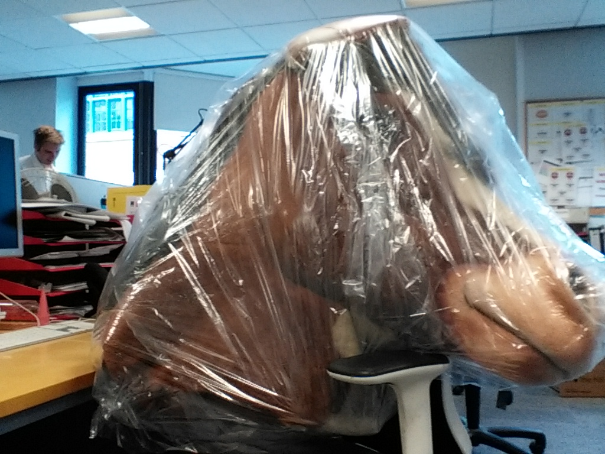

Thursday, August the 4th, 2016
back to: title, date or indexes
Scenes From The Life Of Pansy Cradledew is our popular series in which, Boswell-like, we document exciting scenes from the life of Pansy Cradledew. Today, we turn our attention to Wednesday the third of August 2016.
Wednesday, 3 August 2016 [aetat. 51]. It so happened that on the morning of this day, Ms Cradledew found herself sitting next to the head of a horse enshrouded in cellophane. The horse-head remained in situ for the entire morning, though shortly after the clock struck noon it was removed, and taken away, she knew not where.
